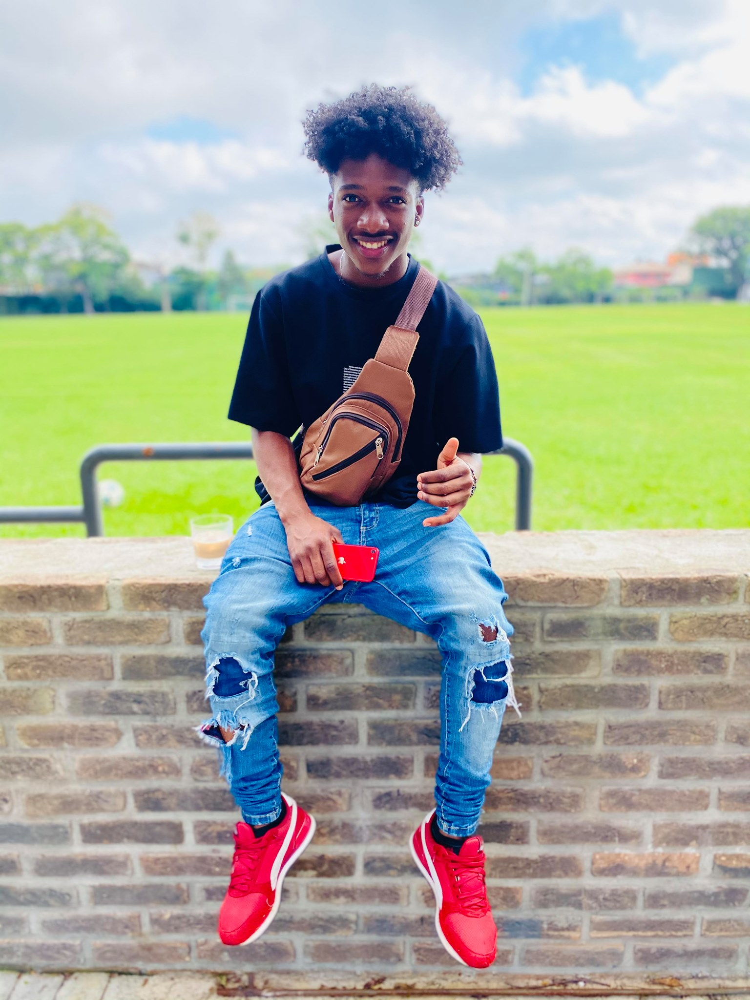

Nasce em Luanda Angola e com 10 anos migrei para o Brasil em Angola gostava de Brincar nas ruas jogava bola , subia em pe de manga , pé de figo sempre fui uma pessoa muito imperativa , migrei para cá por ter uma ligação muito grande com minha tia e por ser apaixonado pelo futebol eu tinha o sonho de ser um grande jogador de futebol e ainda com aquela idade vi a possiblidade de crescer na ara do esporte na escola durante minha estadia no brasil desenvolvi a minha capacidade de trabalhar em equipe comunicação com pessoas de diversas ideologias diferentes
